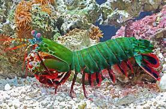

Fatos sobre o Stomatopoda
Informações gerais
O Stomatopoda ou Odontodactylus scyllarus(nome científico), também conhecido como camarão-louva-adeus-palhaço ou ainda lagosta-boxeadora é uma espécie de tamarutaca nativa do Indo-Pacífico, de Guam até a África Oriental. A espécie chama atenção tanto pela coloração quanto pelo perigo.
Confira abaixo sua classificação científica
Aparência
O sotomatopoda é um dos maiores e mais coloridoscamarões comumente avistados. Seu tamanho varia de 3 a 18 cm São principalmente verdes, com patas alaranjadase carapaça anterior manchadacomo a dos leopardos.
É um animal de olhos incríveis, que o permitem ver luz polarizada circularmente. Esse fato fez com que surgissem estudos a fim de determinar se os mecanismos pelos quais seus olhos operam podem ser replicados para uso na leitura de CDs e dispositivos de armazenamento óptico semelhantes.
Ecologia
O Odontodactylus scyllarusconstrói buracos em forma de U no substrato solto próximo às bases dos recifes de coral em águas que variam de 3 a 40 metros de profundidade.
É um predador ágil e ativo, que aplica força contundente ao exoesqueleto da presa até chegar à parte consumível. Tem um dos socos mais rápidos já registrado em qualquer animal vivo, 80km/h.
Possui apêndices raptorais, que causam formação de bolhas de cavitação. Uma vez que elas estouram liberam muito calor e enfraquecem ainda mais a armadura de sua presa. Sua garra possui uma superfície feita de hidroxiapatita extremamente densa.
Referências
-
Wikipedia
The Oatmeal
Wikimedia
PSU